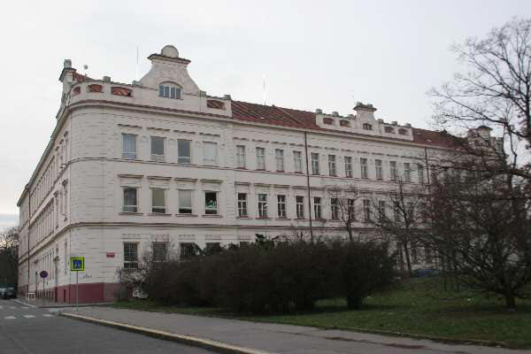
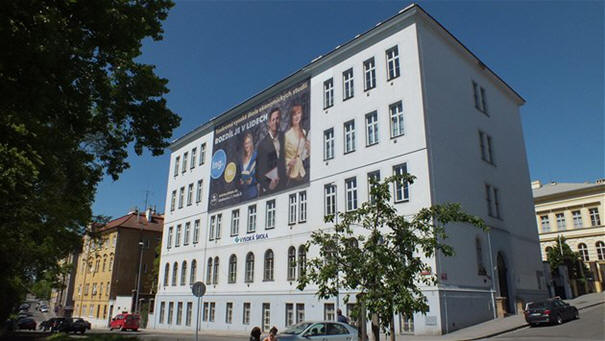

Motto: " Jak si loďku postavíme, tak si na ní zajezdíme. "
Naše mateřská škola je loďka, kterou stavíme z pevných, ale pružných základů. Tak, jak si na její stavbě dáme záležet, tak nám bude sloužit. Krásně nás poveze v klidném proudu, ale vydrží i v bouři a bezpečně nás doveze k našemu cíli.
Filosofie: „ Uspokojovat potřeby dětí, nabízet podněty pro rozvoj individuálního potenciálu, intelektuálních, citových a sociálních schopností. Umožnit dítěti prostřednictvím prožitků získávat zkušenost, probouzet zájem o hodnoty, vést dítě k osvojení postojů a dovedností, které budou dobrým základem do života, které pomohou dosáhnout cíle = stát se zdravou, autentickou, vnitřně integrovanou a socializovanou osobností.“
„ MÍT ZDRAVÍ, DUŠEVNÍ POHODU A PŘÍZNIVOU ŽIVOTNÍ PERSPEKTIVU “
Zápis k předškolnímu vzdělávání na školní rok 2026/2027 proběhne ve
dnech 17.3.2026 a 18.3.2026 od 13 do 17 hodin v budobě MŠ Na Korábě
Informace MČ P8 k zápisům
Tiskopisy potřebné k zápisu naleznete v sekci dokumenty.
Upozornění - den otevřených dveří dne 11.2.2026 na pracovišti Lindnerova se z provozních důvodů ruší. Děkujeme za pochopení.
Dny otevřených dveří proběhnou na obou pracovištích ve dnech 11.2.2026 a 18.2.2026 od 15 do 17 hodin.
Projekt ,,Potravinová pomoc dětem"
formulář
zde
Usnesení Rady MČ P8 o výši
školného od školního roku 2024/2025
(info web MČ
zde)
Zapojení do projektu Šablony OP JAK

